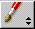

button brings up the Palette window. See "Palettes" for more information on creating and using palettes.
button brings up the Palette window. See "Palettes" for more information on creating and using palettes. Table of Contents
Table of Contents  Previous Section
Previous Section
The  pop-up list allows you to switch editing modes. See "Editing Modes".
The button brings up the Inspector window, which allows you to set various attributes of the currently selected element. "The Inspector" section describes each type of element in more detail.
The button brings up the Palette window. See "Palettes" for more information on creating and using palettes.
Table of Contents  Next Section
Next Section